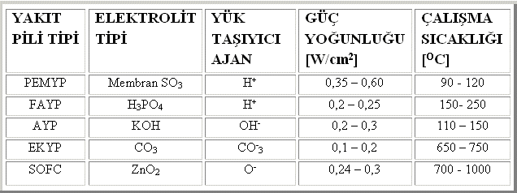
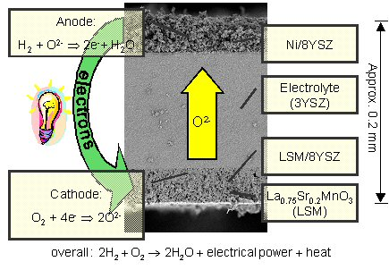
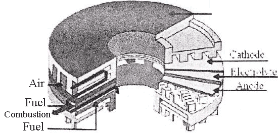
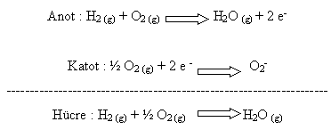
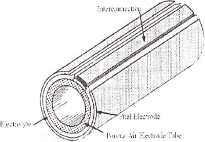
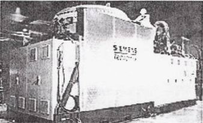

|
4.2 YAKIT PÝLÝ TÜRLERÝ:
Yakýt
pilleri çeþitli þekillerde sýnýflandýrýlabilmektedir.
Çalýþma
sýcaklýklarýna göre;
sýcaklýklarda
çalýþan yakýt pilleri olarak sýnýflandýrýlabilirler.
Çalýþma
basýncýna göre;
- Yüksek
- Orta
- Düþük
(Atmosferik)
basýnçlý
sistemler olarak sýnýflandýrýlabilirler.
Kullandýklarý
yakýt ve/veya oksidanta göre;
- Gaz
reaktantlý (Hidrojen, amonyak, hava ve oksijen gibi)
- Sývý
yakýtlý (Alkoller, hidrazin, hidrokarbonlar)
- Katý
yakýtlý (Kömür, hidritler)
yakýt
pilleri olarak sýnýflandýrýlabilirler.
Pratik
nedenlerden dolayý yakýt pilleri sistemleri basitçe kullandýklarý
elektrolit tipine göre sýnýflandýrýlmaktadýr ve bu adlandýrmalar
ve kýsaltmalar þu anda yayýnlarda yaygýn olarak kullanýlmaktadýr.
Buna göre yakýt pilleri;
- Proton
elektrolit membranlý yakýt pili (Proton Exchange Membrane
-PEMYP)
- Fosforik
asit yakýt pili (Phosphoric Acid - FAYP)
- Alkali
yakýt pili (Alkaline - AYP)
- Ergimiþ
karbonat yakýt pili (Molten Carbonate - EKYP)
- Katý
oksit yakýt pili (Solid Oxide - SOFC)

Tablo
3.2 Yakýt pili tipleri ve genel özelikleri
4.2.1 KATI OKSÝT YAKIT PÝLÝ (SOFC)
Katý
oksit yakýt pilleri yaklaþýk 1000 santigrat derece sýcaklýkta
çalýþýrlar ve sývý bir elektrolit yerine sert, seramik bir
elektrolit kullanýrlar. Katý elektrolitin her iki tarafý geçirgen
özel elektrot maddeyle kaplanmýþtýr.
Yüksek
çalýþma sýcaklýðýnda, negatif yüklü oksijen iyonlarý kristal
madde içerisinde hareket eder. Hidrojen içeren bir yakýt gazý
anottan geçirildiðinde negatif yüklü oksijen iyonlarý yakýtý
oksidize etmek için elektrolitten geçer. Oksijen genellikle
katot tarafýnda havadan elde edilir. Anotta oluþan elektronlar
harici bir yol kat ederek elektrik devresini tamamlar ve elektrik
enerjisi üretilmiþ olur. Katý oksit yakýt pillerinde verim
%60 seviyesindedir.

4.2.1.1
KATI OKSÝT YAKIT PÝLLERÝNÝN TARÝHÇESÝ
Katý
oksit ve erimiþ karbonat yakýt pillerinin tarihsel geliþimi
beraber devam etmiþtir. 1930'larýn sonunda Ýsviçreli bilim
adamý Emil Baur ve arkadaþý H. Preis zirkonyum, yttrium, seryum,
lantanyum ve tungsten gibi katý oksit elektrolitler kullanarak
deneyler yapmýþlardýr.
Bu
çalýþmalardaki tasarýmlarý elektriksel açýdan yeterince iletken
olmadý ve elektrolitlerle aralarýnda karbonmonoksitin de bulunduðu
çeþitli gazlar arasýnda istenmeyen reaksiyonlar meydana geldi.
1940'ta Rus bilim adamý O. K. Davtyan, iletkenliði artýrýcý
çalýþmalar yaptý ancak istenmeyen kimyasal reaksiyonlarý engelleyemedi.
1950'lerin
sonlarýnda katý oksit yakýt pilleri çalýþmasýna Lahey'deki
Central Technical Institute'de, Pensilvanya'daki Consolidation
Coal Company'de ve New York'taki General Electric tesislerinde
hýz verildi.
1959'da katý elektrolitlerin yüksek elektriksel iç direnç,
erime, ve yarý iletkenlikten kaynaklanan kýsa devre olaylarý
gibi problemler yarattýðý belirlendi. Bu yüzden erimiþ karbonat
yakýt pillerinin daha avantajlý olduðu kabul edildi. Ancak
katý oksit pillerden herkes ümidini kesmedi. Örneðin 1962
yýlýnda Westinghouse araþtýrmacýlarý zirkonyum oksit ve kalsiyum
oksit kullanan bir pili test ettiler. Son olarak ta dünyada
artan enerji ihtiyacý ve týrmanan enerji fiyatlarý üzerine
birçok þirket yeniden katý oksit yakýt pilleri konusundaki
çalýþmalarýna hýz verdi.
4.2.1.2
KATI OKSÝT YAKIT PÝLLERÝNÝN UYGULAMALARI
Erimiþ
karbonat yakýt pilleri gibi katý oksit yakýt pilleri de çok
yüksek sýcaklýklarda faaliyet göstermektedir ve bunlar da
genelde büyük sabit santrallerde kurulur. Yine yüksek sýcaklýktan
dolayý açýða çýkan ýsý kojenerasyonda kullanýlmaya uygundur.
Katý
oksit yakýt pilleri de diðer tipler gibi oldukça temizdir.
Ürettikleri doðru akýmýn alternatif akýma çevrilmesi için
inverter sistemleri gereklidir. Basit yapýlarý ve temiz olmalarý
kentlerde kullanýmýný cazip kýlmýþtýr. Örneðin Tokyo'da 25
kW'lýk üniteler halen çalýþmaktadýr.
Nisan
2000'de ABD Enerji Bakanlýðý National Fuel Cell Research Center
and Southern California Edison'da kurulacak bir katý oksit
yakýt pili mikrotribun kojenerasyon tesisini duyurdu. Tesisin
yakýt pili Siemens Westinghouse tarafýndan ve tribün ise Northern
Research and Engineering Corporation tarafýndan üretildi.
Tesiste doðal gaz yakýtlý katý oksit yakýt pilinden 220 kW
enerjinin yaklaþýk %55 verimle elde edilmesi planlanmaktadýr.
Katý
oksit yakýt pilleri konusundaki ortaklýðýný sürdüren Siemens-Westinghouse
2002 yýlý itibariyle toplam 1 MW yakýt pili ve kojenerasyon
tesisini kullanýma açmýþlardýr.
Bu
yakýt pili tipi, büyük, yüksek güç uygulamalarý gerektiren
endüstriyel ve büyük ölçekli merkezi elektrik üretimi istasyonlarýnda
kullanýlabilme umudu vaat eden bir baþka yakýt pilidir. Bazý
üreticiler SOFC 'eri motorlu araçlarda kullanmayý düþünmektedirler
ve SOFC 'ler ile beraber yakýt pilleri yardýmcý güç üniteleri
(APU) geliþtirmektedirler. Bu katý oksit sistemi genellikle
sývý elektrolit yerine,çalýþma sýcaklýklarýnýn 1800 F veya
1000 0C ' ye ulaþmasýna izin veren sert seramik katý zirkonyum
ve az miktarda yitrium malzemelerini kullanýr. Güç üretim
verimliliði %60 'lara,kojenerasyonla %85 'e ulaþmakta ve hücrenin
gücü 100 kW 'a varmaktadýr. SOFC'nin uzun tüpler þeklinde
yerleþtirilmiþ bir türü ile sýkýþtýrýlmýþ disklerden oluþan
deðiþik tipleri mevcuttur. Þekil 3.2. 'te sýkýþtýrýlmýþ disklerden
oluþan SOFC dizayný ve Þekil 3.3. 'te de uzun tüp þeklindeki
SOFC dizayný görülmektedir.
Boru þeklindeki SOFC dizaynlarý
ticarileþmeye daha elveriþlidirler ve dünya çapýnda birçok
þirket tarafýndan üretilmektedirler. Tüp þeklindeki SOFC dizaynlarý
220 kW'a kadar güç üretebilmektedirler. Japonya, halen kullanýmda
olan iki adet 25 kW 'lýk üniteye sahiptir ve Avrupa 'da 100
kW 'lýk bir tesis test edilmektedir.

Þekil 3.2 Sýkýþtýrýlmýþ disk þeklindeki SOFC Dizayný
Hücrede gerçekleþen reaksiyonlar þöyledir;

Reaksiyon sýrasýnda ortaya çýkan elektronlar, yakýt pili devresinden
elektrik akýmý olarak akmakta ve elektrik þebekesini beslemektedir.
Serbest elektronlar,katoda ulaþtýðýnda devre tamamlanmaktadýr.
Bu reaksiyonlarýn oluþmasý için gerekli þartlarýn oluþturulmasýnda
katalizörlere ihtiyaç duyulmaktadýr. PEMYP,FAYP ve AYP 'de
platinyum,ergimiþ karbonatlý ve katý oksit yakýt pillerinde
ise nikel bazlý katalizörler kullanýlmaktadýr.
Bütün
yakýt pili çeþitlerinde hidrojene ihtiyaç duyulmaktadýr. Hidrojence
zengin metanol,doðal gaz,petrol türevleri yakýt olarak kullanýlabilir.
Hidrojenin direkt olarak kullanýmý,yüksek depolama maliyeti
ve güvenlik nedeni ile bir takým sakýncalar içermektedir.

Þekil 3.3 Tüp þeklindeki SOFC dizayný
Þekil 3.4 'de Siemens firmasýna ait bir SOFC uygulamasý görülmektedir;

Þekil
3.4
Siemens firmasýna ait bir SOFC uygulamasý
5.YAKIT
PÝLÝ UYGULAMA ALANLARI
- Uzay
Çalýþmalarý/Askeri Uygulamalar
- Evsel
Uygulamalar
- Sabit
Güç Üretim Sistemi/Yüksek Güç Üretim Sistemi Uygulamalarý
- Taþýnabilir
Güç Kaynaðý Uygulamalarý
- Atýk/Atýk
Su Uygulamalarý
- Taþýt
Uygulamalarý
Uzay
Çalýþmalarý/Askeri Uygulamalar
Yakýt
pillerinin ilk uygulanma alaný, uzay çalýþmalarýdýr. ABD'de
NASA'nýn çalýþmalarý kapsamýnda Apollo, Gemini, ve Space Shuttle
uzay gemilerinde H2-O2 yakýt pili birbirine baðlý 3 ünite
olarak kullanýlmýþtýr. Toplamda 93 adet olmak üzere her ünitede
31 adet yakýt pili kullanýlmýþtýr. Toplam üretilen güç 1.4
kW ve voltaj 27-31 Volt'tur. Pillerin aðýrlýðý 111 kg'dýr.
1995 saatlik uçuþ süresince 450 kg su ve 325 kW/h'lik enerji
üretilmiþtir. Gemini gemisinde ise, farklý olarak PEM tipi
yakýt pili kullanýlmýþtýr. Her ünitede 32 adet pil bulunmakta
ve 1 kW güç saðlanmaktadýr. Bu üç gemide de 2 ünite ihtiyacý
karþýlamak için yapýlýrken, 3. ünite acil ve özel görev için
hazýrda tutulmuþtur. Bugün uzay mekiði elektriði 12 kW'lýk
yakýt pilleri ile üretilmektedir. Amerikan UTC Fuel Cell firmasý
NASA ihtiyacýný karþýlamaktadýr.
Stratejik bir önemi olan enerji kaynaklarý, ülkelerin politikalarýnda
önemli bir yer tutmaktadýr. Yakýt çeþitliliði ve veriminden
dolayý, askeri amaçla kullanýlabilecek en iyi yakýtlardan
biri yakýt pilidir. Gerek askeri araçlarda, gerek ýsý ve elektrik
ihtiyacý durumunda kolay kullanýmýyla askeri yönden yakýt
pilleri iyi bir alternatiftir.
Evlerdeki
Uygulamalar
Sessiz
çalýþan yakýt pilleri, evlerde veya apartmanlarda ýsýtma ve
elektrik ihtiyacýný saðlamak için kullanýlabilecek bir alternatiftir.
Bu tipte kullanýlabilecek yakýt pilleri, propan ve doðal gazdan
üretimi saðlayarak elektrik üretmekte ve oluþan ýsý geri kazanýlarak
ýsýtma sistemlerinde kullanýlmaktadýr. 3-5 kW'lýk yakýt pilleri
evsel tüketim için uygundur. Amerikan hükümeti hidrojenli
yakýt pili uygulamalarý için konutlarda 1000$/kW vergi indirimi
uygulamaktadýr.
Sabit
Güç Üretim Sistemi/Yüksek Güç Üretim Sistemi Uygulamalarý
Dünyada
þu anda yüzlerce sabit güç kaynaðý olarak kurulmuþ yakýt pili
istasyonu bulunmaktadýr. Bu enerji üreteçleri; hastanelerde,
otellerde, iþ yerlerinde, okullarda, güç istasyonlarýnda,
havaalanlarýnda gerek elektrik gerek ýsýtma sistemlerinde
kullanýlmaktadýr. Bu sistemleri kullanan þirketlerin enerji
harcamalarýnda %20- 40 arasýnda bir düþüþ görülmektedir.
Proton Deðiþim Membranlý Yakýt Pili (PEM) santrallerinde verim
%55 civarýndadýr. Üretimde açýða çýkan karbon dioksit ve su
buharý ek bir elektrik üretiminde deðerlendirilirse, enerji
verimi %80'e çýkmaktadýr.
Yakýt pilli güç üretim sistemleri az yer kaplamaktadýr. 2
MW'lýk bir santral 20 m2'den az bir alanda kurulabilmektedir.
Minibüs büyüklüðündeki bir santral ile 20 kW güç üretilebilmektedir.
Bu santrallerin önemli uygulamalarýna örnek olarak Amerikan
ONSI firmasýnýn Kaliforniya'daki 2 MW'lýk, UTC Fuel Cell firmasýnýn
Alaska'daki 200 kW'lýk, Westinghouse-Kanada'nýn Hollanda'daki
100 kW'lýk sistemleri verilebilir.
Taþýnabilir
Güç Kaynaðý Uygulamalarý
Telekomünikasyon
alanýnda, bilgisayar dünyasýnda, görüntü teknolojisinde, alarm
sistemlerinde yakýt pili taþýnabilir güç kaynaðý uygulamalarý
söz konusudur. Bu tip uygulamalar üzerinde çalýþmalar sürmektedir.
Minyatür yakýt pilleri pazara çýktýklarý zaman, cep telefonu
sahipleri cep telefonlarýný bir ay þarj etmeden kullanabileceklerdir.
Bu tip yakýt pilleri metanol ile çalýþabilen, çok küçük boyutta
üretilen pillerdir.
Atýk/Atýk
Su Uygulamalarý
Atýk
su ve atýklarýn iþlenmesi sýrasýnda yanma reaksiyonlarý sonucunda
oluþan emisyonlarý azaltmak ve oluþan metan gazýndan güç elde
etmek için yakýt pilleri kullanýlmaktadýr.
Taþýt
Uygulamalarý
Elektrikli
taþýtlar 2000'li yýllarýn yeni-temiz alternatif uygulamalarý
arasýnda ön sýrada yer almaktadýr. Elektrikli taþýtlar:
- Enerjiyi
doðrudan hattan alarak (tren, troleybüs, tramvay, metro
gibi)
- Enerjiyi
depolanmýþ bir sistemden kullanarak (akülü taþýtlar, ultra
kapasitörlü taþýtlar)
- Taþýnabilir
bir sistemden anýnda enerji üreterek (yakýt pilli taþýtlar,
güneþ pilli-fotovoltaik pilli taþýtlar)
- Hibrit
elektrikli taþýtlar (benzin-yakýt pili, motorin-yakýt pili
taþýtlarý)
þeklinde uygulamadadýr.
Bu
uygulamalar içinde yakýt pilli elektrikli taþýtlar pek çok
avantaj ile öndedir ve geleceðin otomotiv teknolojisi içinde
hidrojen kullanan yakýt pilli elektrikli taþýt uygulamasý
çok büyük alan kaplayacaktýr.
Yakýt pilleri otobüs, kamyon, otomobil ve her türlü taþýt
için yakýt görevi yapabilecek özelliklere sahiptir. Yakýt
pilli araçlar, benzin ve motorin ile çalýþan araçlara göre
daha temiz, ve enerji bakýmýndan daha verimli bir uygulamadýr.
Günümüzde taþýt emisyonlarýnýn çevre kirliliði üzerindeki
etkileri düþünüldüðünde, yakýt pili ile çalýþan araçlar çevre
dostu ve kârlý bir seçimdir. Elektrikli araçlar içten yanmalý
motorlara göre daha yüksek verimlidir.
Kullanýlan
yakýtýn enerji içeriðine baðlý olarak yakýt pili ile çalýþan
araçlarda güç üretimi %40-70 arasýndadýr. Hareketli parçasý
olmayan yakýt pilleri kullanýmýnda taþýtýn gürültü kirliliði
de görülür düzeyde azalmaktadýr. Bir diðer avantaj ise, yakýt
olarak hidrojen kullanýldýðýnda araçlarda emisyon olarak sadece
su oluþmasýdýr.
DaimlerChrysler-Ballard-Ford konsorsiyumu (XCELLSIS) Kanada,
Amerika ve Avrupa'da 2005 yýlýndan itibaren PEM ile çalýþan
otobüsleri piyasaya süreceklerdir. Araçlarda saf hidrojen
gazý kullanýlmasý hedeflenirken, kýsa ve orta vadede bu tercih
incelenmelidir.
Hidrojen gazýnýn depolanmasý üzerinde çalýþmalar
son hýzýyla devam etmekte olup, hidrojen depolanmasý yüksek
basýnçlý, hafif silindirler, kriyojenik sývý sistemleri ve
katý metal hidrit depolama gerektirmektedir. Basýnçlý hidrojen
en iyi sistem olmakla birlikte hafif araçlarda gerekli olan
hacim ve aðýrlýk kriterlerini karþýlamamaktadýr. Günümüzde
nanoteknolojilere olan ilginin artýþý ile birlikte hidrojen
depolamada kullanýlmasý hedeflenen karbon nano-tüpler gelecek
için umut vericidir. Bu sistemlerde hidrojen gazýna alternatif
olarak sývý yakýt beslemesi önerilmektedir. Günümüzde bu tip
uygulamalara örnek olarak lider otomotiv firmalarý metanol
kullanýlan araçlar üretmiþlerdir;
- Ford
Motor Focus FC5
- General
Motors Opel Zafira
- Honda
Motor FCX- V2
- DaimlerChrysler
NECAR 3 prototipi
- Mazda
Motor Premacy FC- EV
- Nissan
Motor R'nessa ve Xterra
- Toyota
RAV4
- Volkswagen
Capri modelleri
|